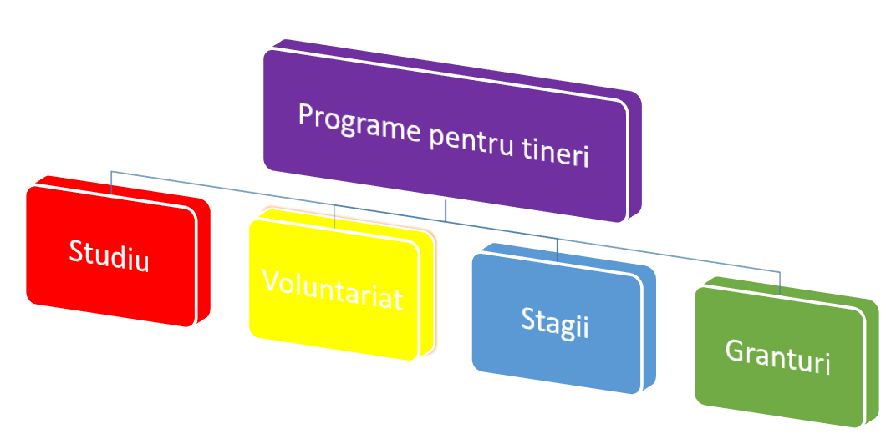

F I Ş A DE LUCRU NR. 11
- Porniţi aplicaţia pentru prezentări, deschideţi o nouă prezentare şi inseraţi în aceasta șase noi diapozitive.
- Primul diapozitiv va fi de tip titlu şi va conţine titlul „Anul 2013 – Anul european al cetăţenilor” şi subtitlul „Numele si prenumele” elevului care realizează prezentarea
-
Al doilea diapozitiv va fi de tip necompletat și va cuprinde:
- caseta text drept titlu cu următorul conţinut: – „Priorităţi pentru anul 2013” va fi scris cu font Rockwell, culoare albastră, dimensiune 54;
-
3 forme automate sub forma de dreptunghiuri de culoare galbenă, linie de contur albastră și care vor avea adăugate următoarele texte:
- Oportunităţi pentru cetăţeni
- Participarea la viața UE
- Programe pentru tineri
-
Al treilea diapozitiv va fi de tipul titlu si tabel:
- titlu: Oportunităţi pentru cetăţeni
- un tabel ce conţine câteva oportunităţi oferite de UE şi numărul de oameni care beneficiază de acestea.
- Diapozitivul patru va conţine o imagine potrivită cu titlul „Participarea la viața UE”. Imaginea va avea dimensiunile: înăţime 12 cm și lăţime 23cm. Aplicaţi un efect de animaţie de intrare a acesteia.
-
Al cincilea diapozitiv va fi de tip titlu și nomogramă și va cuprinde:

- titlu: Programe pentru tineri
- nomograma:
- Realizaţi setarea celor trei forme automate din diapozitivul 2 astfel încât acestea să fie butoane de navigare. Primul face trecerea către diapozitivul3, al doilea către diapozitivul 4, iar cel de-al treilea către diapozitivul 5.
- Pe diapozitivele 3, 4 și 5 inseraţi butoane de acţiune pentru a realiza întoarcerea la diapozitivul 2.
- In diapozitivul şase se vor scrie câteva concluzii în maxim 2 rânduri cu fontul Algerian, dimensiunea 28, culoarea maro și mesajul „Vă mulţumesc!” fontul Script MT Bold, dimensiunea 40, culoare galbenă
- Adăugaţi întregii prezentări ca design template un şablon ales de Dvs. şi aplicaţi un efect de tranziţie aleatoare întregii prezentări. Salvaţi fişierul cu numele Cetatenie europeana